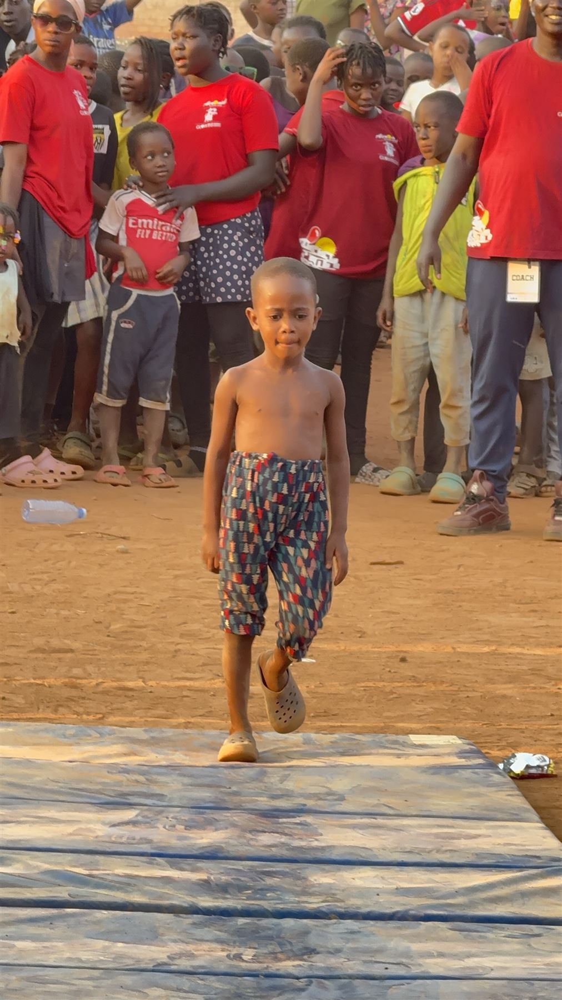
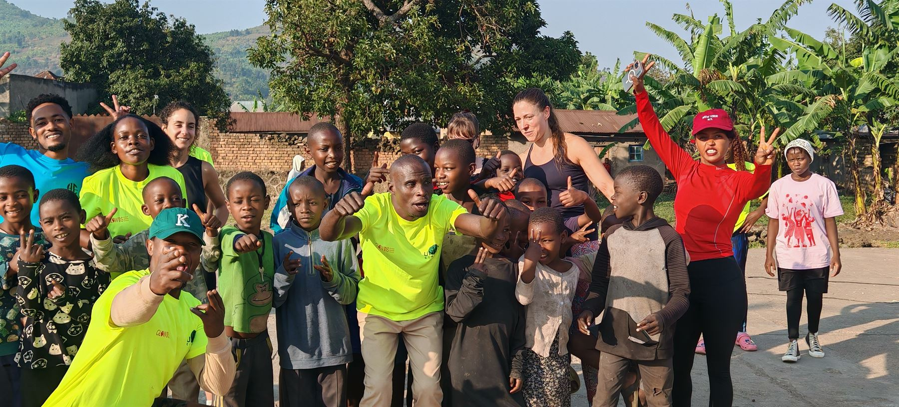
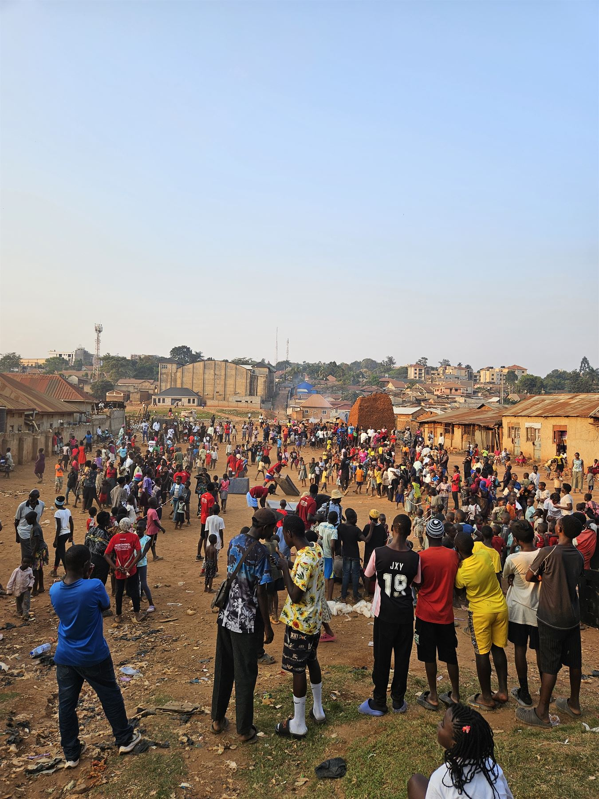

Photo gallery
Creativity grows in community.
Moments from Acromind Initiative programmes, where young people play, learn, practise, and perform together.
In pictures
Young people finding room to move and grow.
These images share a glimpse of the people, practice, and creative activities at the heart of our work.






Questions about a photo? Contact the Acromind team.